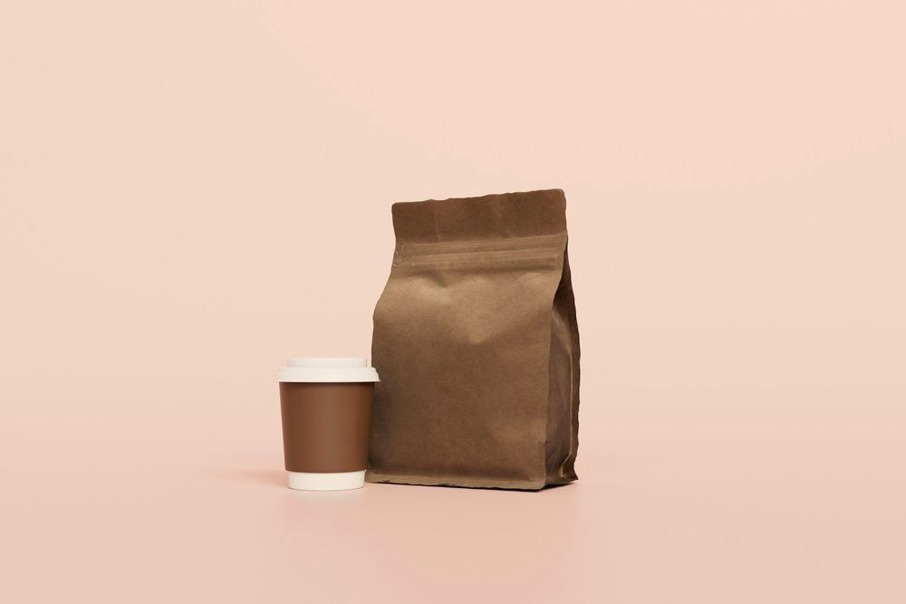
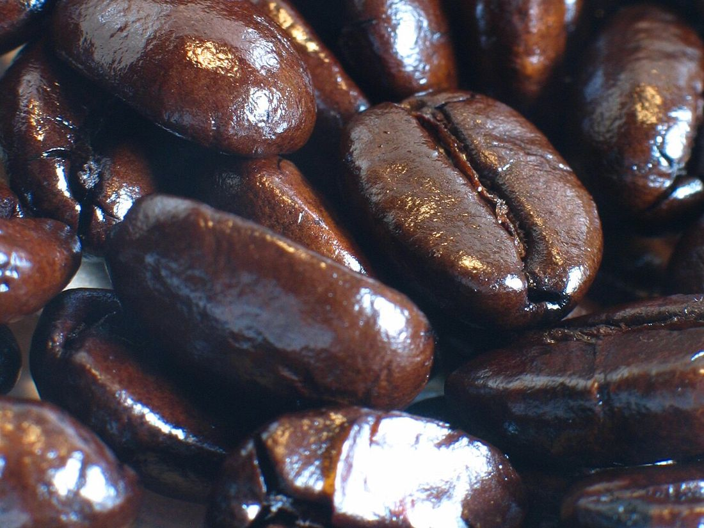
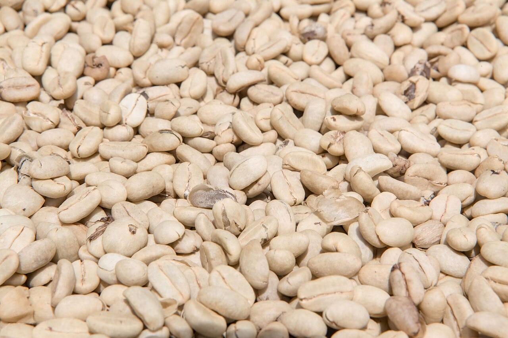
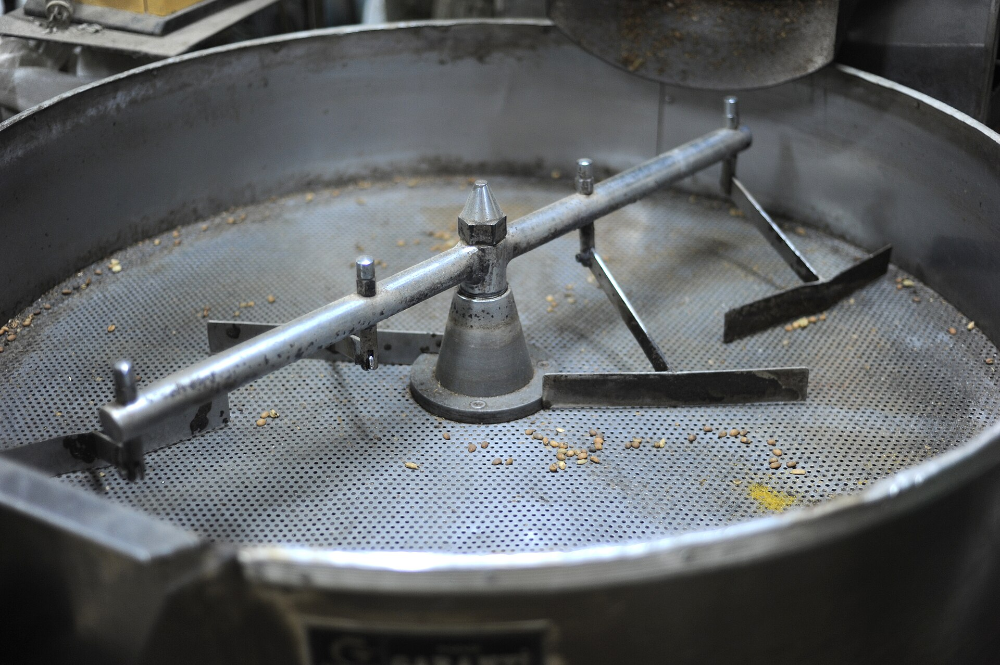
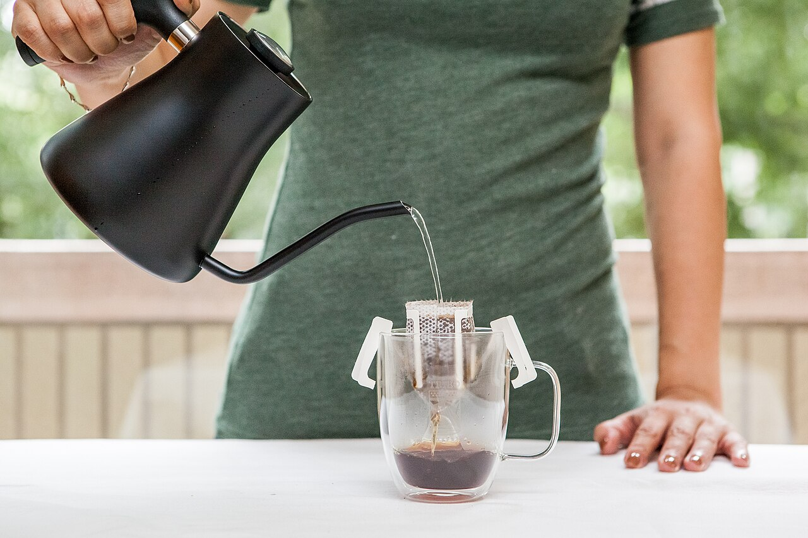

01
Пуровер V60
- кофе18 г
- вода300 мл
- температура93–95 °C
- время2:30–3:00
Помол средний, как морская соль. Заливай в три приёма, между ними давай слою осесть.
Локальная обжарка · с 2023 года
«Углёк» — маленькая обжарка в центре города. Жарим маленькими партиями по четвергам и отправляем в тот же день: к тебе приезжает пакет не старше 72 часов.
100% арабика · зерно и помол под любую заварку

Каталог
Свежесть — это не вкус, а дата.
ростер «Углёк-2» · четверг, 08:40
Мы просто не продаём вчерашний кофе.
Инструкция
Помол средний, как морская соль. Заливай в три приёма, между ними давай слою осесть.
Помол чуть мельше сахара. Десять помешиваний — и прессуй: мягкая чашка без горечи.
Помол крупнее сахара, иначе горчит. Сними с огня, как только зашипит, и охлади низ холодной водой.
Подписка
Выбираешь частоту — мы жарим, мелем (если нужно) и привозим. Каждый раз новое зерно из каталога: −10% и бесплатная доставка.

О нас

01 зелёное зерно
02 обжарка
03 чашкаМы начали в 2023-м с домашней ростерии на 500 граммов и мешка зелёной Бразилии. Сейчас жарим на барабане по 12 килограммов, но правило осталось то же: партия не продаётся дольше недели — в четверг жарим новое.
Каждое зерно пробуем сами: спелый профиль ищем вслепую, а не по шаблону «светлая кислинка». Иногда получается с третьего раза — и это нормально.